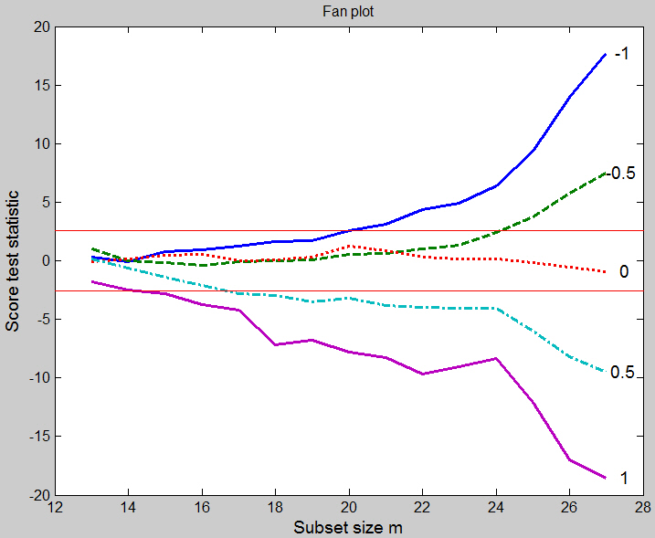
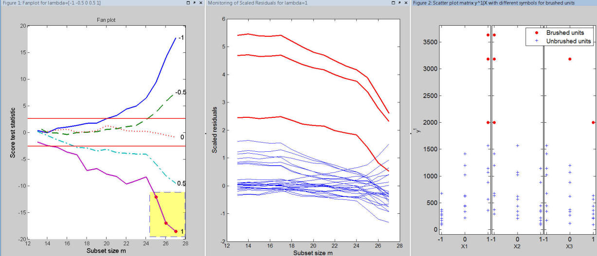

Fan Plot
The “fan plot” displays the values of the score test statistic during the forward search for different values of the Box-Cox transformation parameter λ. If the size of the data set is small (i.e. smaller than 100) generally it is enough to consider the five most common values of λ : −1,−0.5, 0, 0.5 and 1, otherwise a finer grid of values of λ may be needed.
In the fan plot we perform a separate search for each value of λ which is tested. The data are transformed and a starting point is found for each forward search, which then proceeds independently for each values of λ using the transformed data.
The fan plot allows assessment of the proportion of the data supporting a particular transformation, information not available from other methods of analysis.
Suppose you want to produce the fan plot for the wool data.
% Load wool data: 27 observations and 3 explanatory variables
XX=load('wool.txt');
y=XX(:,end);
X=XX(:,1:end-1);
% Function FSRfan stores the score test statistic.
%In this case the five most common values of lambda are considered
[out]=FSRfan(y,X);
% Produce a fan plot and display it on the screen
fanplot(out);
The fan plot appears as follows

Initially there is no evidence against any transformation. When the subset size m is equal to 15 (56% of the data), λ = 1 starts to be rejected. The next rejections are λ = 0.5 at 67% and −1 at 74%. The value of λ = 0 is supported not only by all the data, but also by our sequence of subsets. The observations added during the search depend on the transformation. In general, if the data require transformation and are not transformed, or are insufficiently transformed, large observations will appear as outliers. Conversely, if the data are overtransformed, small observations will appear as outliers. This is exactly what happens here. For λ = 1 and λ = 0.5, working back from m = 27, the last cases to enter the subset are 19, 20 and 21, which are the three largest observations. Conversely, for λ = −1 and λ = −0.5 case 9 is the last to enter, preceded by 8 and 7, which are the three smallest observations. Since the data are in standard order for a 33 factorial, the patterns of these numbers indicate a systematic failure of the model. For the log transformation, which produces normal errors, there is no particular pattern to the order in which the observations enter the forward search.
Notice that using the option datatooltip it is possible to see which units enter the search for each particular step. For example, with the code
fanplot(out,'datatooltip',1);
once the user clicks on step m=25 in the search for λ = 1 the tooltip shows the following information.

Usng the option databrush it is immediately possible to see the position of the brushed units in the scatter plot matrix and theire resiudual in the monitoring residuals plots (see code and Figure below).
fanplot(out,'databrush',1);

In conclusion: every time a brushing action is performed on the fan plot, it is possible to display in an automatic way also the information about the position of the brushed units in the scatter diagram of y against the required explanatory variable(s) and to immediately visualize the residuals in the monitoring residuals plot.
Note In order to label the
residuals which are brushed in the fan plot, the following
code can be used:
fanplot(out,'databrush',{'Label' 'on' 'RemoveLabels' 'off'});
|